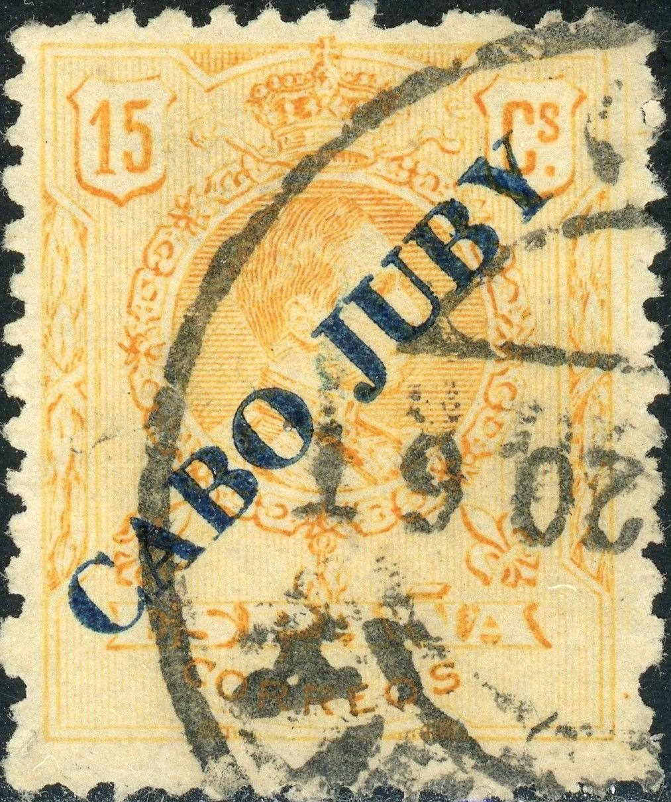

Return To Catalogue - Spanish colony
Note: on my website many of the
pictures can not be seen! They are of course present in the
catalogue;
contact me if you want to purchase the catalogue.
'5 CENTIMOS' (blue) on 4 p red '10 CENTIMOS' (red) on 10 p violet '15 CENTIMOS' (red or green) on 50 c brown '40 CENTIMOS' (red or green) on 1 P lilac
Value of the stamps |
|||
vc = very common c = common * = not so common ** = uncommon |
*** = very uncommon R = rare RR = very rare RRR = extremely rare |
||
| Value | Unused | Used | Remarks |
| 5 c on 4 p | RR | RR | |
| 10 c on 10 p | RR | RR | |
| 15 c on 50 p | RR | RR | |
| 40 c on 1 P | RR | RR | |
The stamps 5 c on 4 p and 10 c on 10 p exist with double overprint (RR), the 10 c on 10 p even exists with a green and red overprint (RRR).

(Reduced size)
(Does anybody have more images from this country? Please contact me!)
1 c green (1922) 2 c brown 5 c green (overprint red) 5 c lilac (1925) 10 c red 10 c green (1925) 15 c yellow 20 c green (overprint red) 20 c violet (1922) 20 c violet (1925, other type) 25 c blue (overprint red) 30 c green (overprint red) 40 c red 50 c blue (overprint red) 1 P red 4 P lilac (overprint red) 10 P orange Newspaper stamp

4/4 c green (small stamps, overprint red) Express stamp

20 c red
Value of the stamps |
|||
vc = very common c = common * = not so common ** = uncommon |
*** = very uncommon R = rare RR = very rare RRR = extremely rare |
||
| Value | Unused | Used | Remarks |
| 1 c | R | R | |
| 2 c | * | * | |
| 5 c green | ** | ** | |
| 5 c lilac | c | * | |
| 10 c red | ** | ** | |
| 10 c green | * | * | |
| 15 c | * | ** | |
| 20 c green | R | R | |
| 20 c violet | R | R | |
| 20 c violet | * | * | (1925) |
| 25 c | ** | ** | |
| 30 c | ** | ** | |
| 40 c | ** | ** | |
| 50 c | ** | ** | |
| 1 P | *** | *** | |
| 4 P | *** | *** | |
| 10 P | RR | RR | |
| 4/4 c | * | * | Newspaper stamp |
| 20 c | ** | ** | Express stamp |
Letter with typical(?) cancel

I've been told that this is a forged overprint.
After 1920 more stamps of Spain received an overprint: "CABO-JUBY" or "CABO JUBY".

{kind=link}
{kind=link}